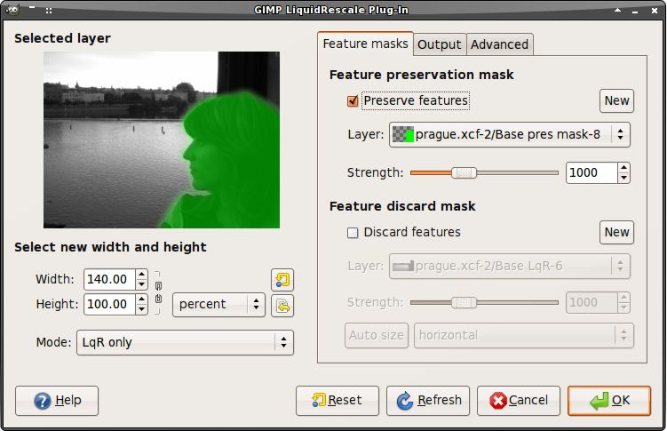
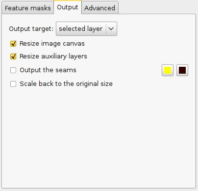
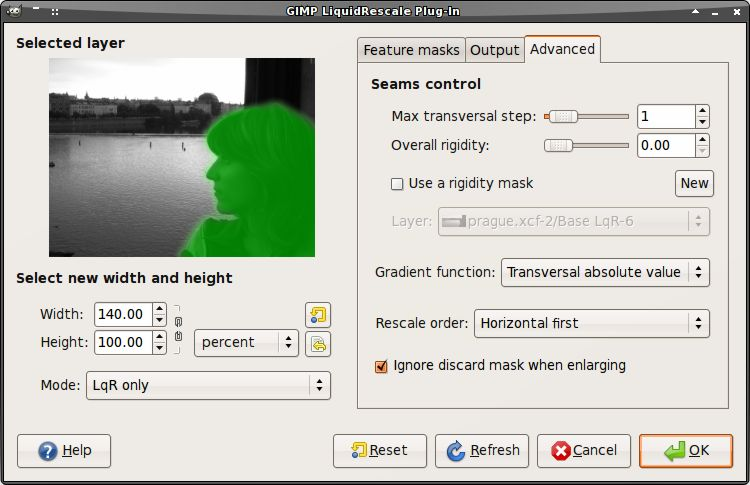
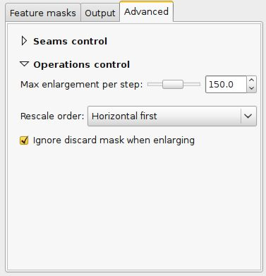
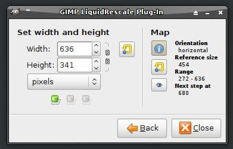

The Liquid Rescale plugin is an implementation of the content-aware resizing by seam carving algorithm by Shai Avidan and Ariel Shamir.
It aims at resizing pictures non uniformly while preserving the features of the picture, i.e. avoiding distortion of the important parts of the picture. It can also be used to remove portions of the picture in a consistent way.
It works both ways (enlarging is performed in successive steps), and it can use extra layers as masks to select which features of the image should be preserved and which should be discarded.
See also Appendix: The seam carving technique in brief at the end of this page for an introduction to seam carving concepts.
The plugin works on the active layer or floating selection. It can also operate on multiple layers through the "Filter all layers" plugin and using the GIMP Animation Package facilities for video editing.
The plugin only works on whole layers, if a selection is present it is saved to a channel and removed. If the layer has a transparency mask, an option is given to select the behaviour (apply/discard).
The plugin can also be operated in batch mode from the command line, see this section for details.
User interface description (non-interactive mode)

Select new width and height
Note that the final size can be set automatically when removing objects, see below.
Feature masks
Quick guide
The easiest way to manually select the features of the image that you want to protect or discard is the following:
- Select the layer you want to resize (not a floating selection) and invoke the plugin
- Press the "New" button in the "Feature preservation mask" section (this will create a transparent layer, with 50% opacity, and pick an appropriate colour).
- Put the plugin dialog aside and paint on the areas of the image you want to preserve
- Go back to the plugin dialog and press the refresh button to see the mask you painted
- Repeat everything for the features to discard
If you want to remove portions of the image, you can press one of the two buttons besides the "Auto size" label to determine the final size automatically (this is only reliable when dealing with very simple masks).
Note #1: object removal is only possible when shrinking. By default, feature discard masks are ignored when enlarging, because in that case the masked areas would be inflated rather then removed. If you actually want to get this effect, you need to unset the corresponding option in the "Advanced" tab (or use interactive mode).
Note #2: preservation of features is not possible if enlarging too much, because the inflation process is the exact reverse of the shrinking process, so the maximum amount of pixels you can add to a layer corresponds to the amount of pixels which are not protected. For example, if you have a 1000 pixel wide image and you have marked a 800 pixel wide area for protection, the final width should be less than 1200 pixels. If you want to enlarge more, do it in steps, or set the "Max enlargment per step" option in the advanced settings to an appropriate value.
Full description
Output

This tab has a number of options related to the output of the plugin.
- Output on a new layer
- Specifies if the resized image should be written on a new layer. By default, it is off.
- Resize image canvas
- Specifies whether the image canvas should be resized to meet the new size of the active layer. By default, it is on.
- Resize auxiliary layers
- Specifies whether the layers used to manually select the features of the image or to specify a rigidity mask will be resized along with the active layer. If this option is checked, those layers will be first cropped to the active layer's size, then they will undergo the same seam carving and inserting process as the active layer. By default, it is on, but it is only active when some layers are selected in the "Feature masks" tab or if a rigidity mask is being used (see below).
- Output the seams on a new layer
- Specifies whether to create a new layer with the seams map in interactive mode. The two buttons on the right of it let the user choose the seams colour range. The seams are computed on the original layer as far as they are needed for the new size (e.g. there will be 100 seams if reducing or enlarging by 100 pixels), the remaining areas are transparent. In order to read the result, use this option together with "Output on a new layer", and overlay the seams map to the original layer. If you rescale in two directions at once, you will obtain two maps, but the second one will be computed over an invisible intermediate image, so this is not very useful. The same applies in the case you choose to rescale back to the original size with LqR, or when the resizing goes beyond the limit set with "Max enlargment per step". Note that this option is ignored in interactive mode, except for the colours you choose, which are used when dumping the seam maps manually.
- Scale back to the original size
- Specifies whether to perform a scale back operation after the liquid rescale operation has been performed. This can be useful for example for object removal and content enhancement. If this option is checked, a menu appears below it to let the user choose the details of the operations: it is possible to revert to the opriginal width and height using either liquid rescale or the standard scaling algorithm, or it is possible to perform a uniform scaling with the standard algorithm and reach back only the original width, or only the original height. Note that this option is ignored in interactive mode.
Advanced
This tab has some options which can be used to tweak the plugin behavior.
Seams control

- Max transversal step
-
This option lets you choose the maximum transversal step that the pixels in the seams can take. In the standard algorithm, corresponding to the default value step = 1, each pixel in a seam can be shifted by at most one pixel with respect to its neighbors. This implies that the seams can form an angle of at most 45 degrees with respect to their base line.Increasing the step value lets you overcome this limit, but may lead to the introduction of artifacts. In order to balance the situation, you can use the rigidity setting.
- Overall rigidity
-
Use this value to give a negative bias to the seams which are not straight. May be useful to prevent distortions in some situations, or to avoid artifacts from pixel skipping (it is better to use low values in such case). This setting applies to the whole selected layer if no rigidity mask is used.[Technical information: the bias is proportional to the difference in the transversal coordinate between each two successive points, elevated to the power of 1.5, and summed up for the whole seam.]
- Use a rigidity mask
-
It is possible to specify different rigidity values for different areas of the image, using an auxiliary layer, by following the same procedure used to specify the feature masks (the default colour for newly created rigidity masks is blue). If a rigidity mask is specified, its value at each pixel (computed in the same way as for the feature masks) will be used as a rigidity coefficient, to be multiplied with the overall one.Note #1: transparent (or black) areas in the rigidity mask always correspond to 0 rigidity, no matter what the overall value is.Note #2: rigid areas have a slight repulsive effect on seams, similar to that of a preservation mask. In order to compensate for this, you may use a discard mask.
- Gradient function
- It is possible to choose which function is to be used to calculate the energy map of the image. For each pixel in the image, the x,y components of the gradient are computed from the pixel's four nearest neighbors. The exact form of the energy map depends on the choice of the gradient function, and this in turn determines which elements of the image are more important, and should thus be preserved, and which are not, and can be removed (if shrinking) or inflated (if enlarging). Using the Null function in conjunction with the feature preservation mask can be used to override completely the automatic feature detection, thus allowing the user to generate his own energy map (e.g. by another plugin).
Operations control

- Max enlargement per step
- This option sets the maximum enlargement (in percent) which will be performed in a single rescale step. When the final size is greater than this, the plugin will automatically stop and restart the rescaling as many times as needed. You might need to reduce this value if you have large preservation masks (but then the same areas will be affected over and over by the rescaling).
- Rescale order
- When rescaling in both directions at the same time, it can be chosen whether to resize first in the horizontal and then in the vertical direction, or vice versa.
- Ignore dicard mask when enlarging
- The effect of the discard mask is reversed when the plugin is used for enlarging an image; as this is normally undesirable, they are ignored by default when the first scaling direction is to be enlarged (in such cases, a small warning icon will appear in the "Feature discard mask" section). Unset this option if you want to override this behaviour. Note that this option is ignored in interactive mode.
Using the plugin for video and animation editing
Using the plugin with GAP
The plugin can take advantage of the GIMP Animation Package (GAP) for video editing, making it possible to apply liquid rescaling to all the frames of a video (please refer to the GAP documentation for instructions about video editing in GIMP).
Note however that the GAP facilities only allow to select the working layer, but the liquid rescale plugin needs auxiliary layers as well to work at its full potential. In order to work around this problem, auxiliary layers are set according to their names: therefore, if you want to use a preservation mask in each frame, for example, you should take care that all the layers which you intend to use as such have the same name in all of the frames. The same applies to discard masks and rigidity masks.
Applying the plugin to all layers (e.g. for animations)
It is also possible to apply the plugin to all the layers in a given image (for example when editing an animation), using the option "Filter all layers..." from the "Filters" menu and choosing "plug-in-lqr" in the dialog which appears. Operations follow the rules explained in the GAP section; however, you will run into problems if using auxiliary layers as masks, since the plugin will be applied to those as well.
User interface description (interactive mode)

Pressing the interactive button in the main plugin dialog switches the plugin to interactive mode, and applies the current settings, including the current size settings. In interactive mode only the size can be modified (and modifications will be applied immidiately), and some options are ignored:
- Output the seams (you have to do it manually, see below)
- Scale back to the original size
- Ignore discard mask when enlarging
Select new width and height
This section includes the controls for the layer size. The application of the changes is almost immediate, but only after the buttons are released; this means that, if you have activated the chain button to preserve the aspect ratio, the results will be different if you do many small steps or you do the rescaling in one sweep. The reset button on the right brings the size back to the initial value: this recovers the original image if the map was never reset, but it will produce a different image otherwise (see also the Map section below).
Map
The additional "Map" section in the dialog is about the internal seam map which the plugin uses for its computations. Any map has an orientation (depending on the scaling direction), a reference value (the one it was initialized with) and a range. The map allows to rescale almost in real-time within its given range and along its direction; going beyond the current range will produce the updating of the map. The maps store all the scaling information about the specified range: therefore, going back to the reference value will reproduce the initial image. However, a new map is generated automatically any time the direction of the scaling is changed, or when the size exceeds the max enlargment per step; when this happens, all previous information is lost. There are three buttons in this section:
- Info button
- Displays or hides information about the internal seam map
- Reset button
- Force the map reset. This is like restarting the plugin from the current situation. For example, if you change the size, then press this button, then press the reset button in the size section, you will have the same result as using the "Scale back to the original size" option (with the "liquid rescale" setting) in non-interactive mode.
- Dump seam map button
- This button can be used to view the current seam map. Its effect is the same as that of the "Output the seams" option in noninteractive mode, only you need to do it manually, and it prints out one map at a time. The first time you press this button in a session, a new layer will be crated to hold the map, but if you press it again the new map will take the place of the old one. In order to make sense of the result, you have to bring the layer you're working on to its reference size after the dump, and overlay the map on it. This button is only active for RGB images.
Using the plugin in batch mode
The plugin comes with some convenience scripts which make it easy to operate it the on files from the command line. You can find a description of the scrits arguments by using the "Procedure browser" from the "Help" menu in GIMP and looking for batch-gimp-lqr, batch-gimp-lqr-full and batch-gimp-lqr-full-use-id; the meaning of the options should be obvious from knowing how the standard interface works.
Appendix: The seam carving technique in brief
The plugin works by finding so-called "seams" over an image, i.e. continuous, zig-zagged lines transversing the image from top to bottom ("vertical" seams), or from left to right ("horizontal" seams). When one such seam, say a vertical one, is removed from an image (the "carving" operation), the width of the image is reduced by one pixel. Removing horizontal seams reduces the height. Iterating such operations (find a seam and remove it), one can reduce the image size at will. Collecting together all the seams which were carved from an image, in their respective order, constitutes what is called a "seams map".
Mirroring the carving process, by inserting additional seams besides the ones which are found by the algorithm, instead of removing them, image enlargement can be obtained, too. The meaning of the seam map is reversed in this case.
In order to get good results form this technique, the main issue is finding which are the most suitable seams to carve or to insert. If the aim is simply to change the proportions of the image without affecting too much the content, for example, "good" seams will be those which don't cross important features of the image, and instead pass through a background landscape.
By default, the plugin is tries to find the seams which cross the lowest-contrast areas (how this happens exactly is specified by the gradient function choice in the "Advanced" tab). Therefore, each pixel of the image is assigned a so-called "energy value": the higher the contrast, the higher the energy, and seams are less likely to cross high-energy areas.
Since in many cases this simple contrast-based method is not optimal, the energy function can be "biased" by the user, who can decide that some areas should have a higher energy (using a preservation masks) or, on the contrary, that they should have a lower energy (using a discard mask), and therefore effectivily "drive" the seams and the whole process.
Rigidity masks work in a similar way, but the energy bias that they add does not only depend on the mask value over each pixel, but also on how much the seams which try to cross that pixel are straight.
One intuitive picture is as such: the seams try to get from one side to the other of the image keeping on a path with an energy as low as possible; preservation masks have the effect of putting a barrier on their path, which, if high enough, deviates the seams away from it; discard mask, on the other hand, are like valleys which attract seams. Rigidity masks have the effect of putting barriers besides each seam, which tend to make it straighter.